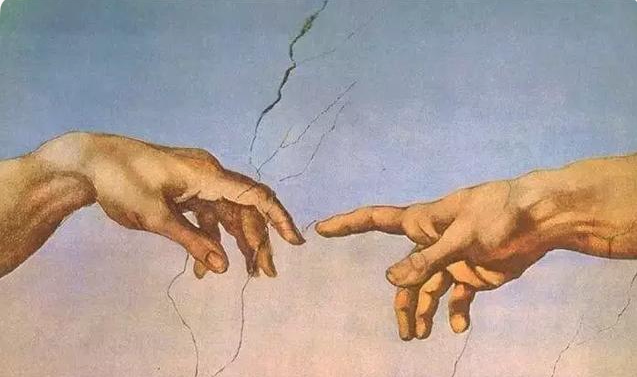

SAGEBOOK
你的智能创作伙伴 · 爽剧、网文、剧本、长篇

✍️
沉浸写作
🤖
内嵌AI写作技能
💾
实时保存
🔒
本地隐私保存
🔄
电脑、手机同步
✍️
开始写作
打开即写 · AI 技能与导出都在右侧面板里，不离开页面
🧰
更多创作工具
构思 / 分析 / 发布 · 点击展开
⌄
✍️ 写作技能（完整 12 项页）
📋 大纲编辑器
👤 角色管理
🌍 世界观管理
🕸️ 知识图谱
📊 写作分析
📱 网文平台工具
🤖 AI 深度集成
📚 模板库
⚙️ 设置
🚀 三步开始
在
设置
里配置 AI（推荐本地 Ollama）
点「开始写作」进入编辑器，直接动笔
选中文字 → 点右侧面板「⚡ 技能」→ 调 AI / 导出
📖
官方使用帮助说明
从配置 AI 到手机云同步，九节图文详解 · 点击查看